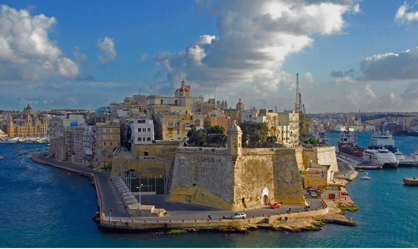

We Build Careers

اقامت تحصیلی در کشور مالتا
معرفی کشور مالتا
جمهوری مالت کشوری در جنوب اروپا در مرکز دریای مدیترانه است این کشور از مجمع الجزایرکوچکی تشکیل شده که نقش استراتژیک مهمی در طول تاریخ داشته و مکان مبارزه و برهم کنش بین اروپای در حال شکل گری و فرهنگ و تمدن قدیمیتر افریقا و خاور میانه بوده پایتخت این کشور شهر والتا می باشد این کشور در بردارنده ۳ جزیره مسکونی به نامهای مالت و کومینو و کومینوتو است در ۹۳ کیلومتری جنوب جزیره سیسیل ایتالیا می باشد .
مالتا جز توافق نامه کشور های عضو شینگن است بجز اتحادیه اروپا و شهروندان سویس باقی افراد از طرف ایران ، افغانستان ، تاجیکستان نیاز به ویزا دارند.
زبان کشور مالتا
زبان مالتی و انگلیسی دو زبان رسمی این کشور است اما زبان ایتالیایی هم به صورت گسترده استفاده می شود . که زبان مالتی مانند ایتالیایی ، عربی ، عبری است.
با توجه به جزیره بودن این کشور دانشگاههای دریایی و کشتی سازی و اسکله و سازه و رشتهای …. دارای اعتبار فراوان میباشد.
بررسی شرایط دانشگاهها
باید توجه داشته باشیم که شخصی که ویزای دانشجوی مالتا را دریافت میکند در واقع ویزای شینگن را دارا میباشد . که به کشورهای عضو شنگن میتواند رفت و آمد داشته باشد.
برای گرفتن پذیرش از دانشگاههای این کشور با مدرک صادر شده از تمامی دانشگاههای ایران میتوان پذیرش دانشگاهها را اخذ کرد . دانشگاههای موجود در این کشور بیشتر در شمال شرقی این جزیره تجمع دارند که بزرگترین دانشگاه مالت، دانشگاه دولتی است که از ۱۱،۰۰۰ دانش آموز ۷۰۰ دانش آموز بین المللی هستند . پردیس اصلی این دانشگاه در منطقه بندری Msida، فقط در غرب والتا میباشد همچنین یک دانشگاه کوچک در والتا و دیگری در Gozo که در درجه دوم جزیره مالت وجود دارد.
بررسی دانشگاه مالت
تنها دانشگاه در مالت دانشگاه مالت است، در ۱۵۹۲ تاسیس شد، که یک دانشگاه دیگردر سال ۱۷۶۹٫تاسیس شد و این دانشگاه از قدیمی ترین دانشگاه ها مشترک المنافع خارج از انگلستان است. این شهرت به مدت طولانی به خاطر پیشرفت علمی و مدارک تحصیلی خود بوده است که این دانشکده اعضای دکترای خود را از دانشگاه آکسفورد، کمبریج، ادینبورگ و دیگر دانشگاه های معتبر در سراسر جهان دریافت کرده است.
سیستم دانشگاه دولتی در مالت همچنین شامل کالج مالت از هنر، علم و فناوری در پائولا (در جنوب والتا) و موسسه مطالعات گردشگری در سنت جولیان (در شمال غرب). همراه با دانشگاه مالت، همه در برنامه تبادل اراسموس اتحادیه اروپا و فرایند بولونیا برای سازگاری آموزش عالی در سراسر اروپا شرکت میکنند. زبان آموزش رسمی به زبان انگلیسی است، هر چند دانشجویان بین المللی نیز تشویق به یادگیری مالتی میشوند . دانشگاه مالت بالاترین نهاد آموزش از دولت های آن است که به طور عمده تامین مالی و به تمام کسانی که شرایط لازم باز است. در طول چند سال گذشته، دانشگاه ساختار خود را در جهت همسو با روند بولونیا که پیش بینی استقرار عالی آموزش و پرورش منطقه اروپا در سال ۲۰۱۰ مورد بررسی قرار داده است. با آگاهی از نقش های عمومی آن، دانشگاه تلاش برای ایجاد دوره های مرتبط و به موقع در پاسخ به نیازهای کشور است. سنا و شورا بالاترین ناظر بر دانشگاه هستند . برای ورود به دانشگاه ی دوره وجود دارد دوره مطالعات میباشد که دوره مطالعات پایه اساسی را برای دانش آموزان قوی می سازد در واقع دانش آموزان دبیرستان بین المللی که مدرسه متوسطه یا دبیرستان خود را در خارج از کشور را تکمیل کرده اند اما شرایط ورود لازم را نداشته باشند، با گذراندن این دوره واجد شرایط برای ورود به دوره کارشناسی در دانشگاه مالت میشوند . این دانشگاه به سمت رفع نیازهای زیربنایی و صنعتی کشور میرود که با ارائه تخصص در زمینه های حیاتی میباشد. این دانشگاه تقریبن بیش از ۳۰۰۰ دانش آموز در سال در رشته های مختلف فارغ التحصیل می نماید. رشته ای در این دانشگاه باز شده که به آموزش متخصصان مجرب، با تجربه تحقیق، که نقش کلیدی در صنعت، تجارت و امور عمومی به طور کلی میپردازد.
همچنین تعدادی کالج ها و دانشگاه های خصوصی در مالت، که هم علاوه بر این دانشگاهها ، دانشگاه بین المللی میدلسکس انگلستان، در منطقه PEMBROKE (در شمال غرب والتا) وجود دارد که استقبال از دانش آموزان را از اول سپتامبر ۲۰۱۳، برای اولین بار انجام داد که شامل یک مجموعه اولیه از دوره تمرکز بر کسب و کار، امور مالی و ICT است.
دوره های آموزشی در دانشگاه مالت ( در کالج یسوعیون) شامل معماری، هنر، مطالعات دیپلماتیک، آموزشی، مهندسی، حقوق، پزشکی، علوم و الهیات. GF Abela رشته تاریخ و کالج Msida در رشته هنر میباشد که در سال ۱۹۹۵ کالج مالت هنر تاسیس شد که علم و صنعت ارائه می دهد و طیف بسیار گسترده ای از آموزش و پرورش وهمچنین آموزش حرفه ای را در بر دارد که در پردیس اصلی آن در پائولا (بیشتر والتا) موسسه بین المللی حقوق دریایی در مالت مستقر هستند.
حدود ۱۰٪ ازافراد ۲۰-۲۹ ساله در مالت در حال آموزش در دانشگاه ها میباشند ، که تا حدودی کمتر از متوسط نرخ اتحادیه اروپا از ۲۵٪ می باشد. با این حال، نرخ رشد دانش آموزان در آموزش عالی تشویق می کند که در دهه بین ۱۹۹۹ و ۲۰۰۹، جمعیت دانشجویی ۵۰ درصد به حدود ۲۳،۰۰۰ دانش آموزان رشد داشته است نسبت زن به مرد برای ثبت نام ناخالص در آموزش عالی ۰٫۷۲ است. سواد در میان مردم ۱۵-۲۴ ساله ۹۸٪ است.
برای دانش آموزانی که می خواهند برای توسعه سطح زبان انگلیسی خود اقدام نمایند، مالت نیز به خانه تعداد زیادی از مدارس انگلیسی زبان معروف است.
نشانی:ساری- میدان امام-ساختمان برلیان-طبقه اول-بالای بانک تجارت،واحد شماره 19
لطفا قبل از آمدن به موسسه با کارشناسان موسسه تماس بگیرید
موسسه اعزام دانشجو کندو دکتر عزیزی
با مجوز وزارت علوم
شماره های تماس جهت تعیین وقت
011333675000
09030612326
(زمان حضور آقای دکتر عزیزی: عصر های یک شنبه،سه شنبه و پنج شنبه از ساعت 16 الی 20)
Address:
Kühlwetterstraße 8.
Room Number 0227
52072 Aachen
Germany
Contact:01573 8947230-02418025258
Business Hours:
Mon 7:00PM - 9:30AM
Wed 7:00-9:30PM
Sat 10:00AM-6:30PM
Sun 10:00 AM - 6:30 PM
کلیه حقوق مرتبط به این وبسایت متعلّق به موسسه اعزام دانشجو کندو دانش آوران سام میباشد
cds.org.ir, Copyright©2015, All Rights Reserved
Design by : BOOMHUNK